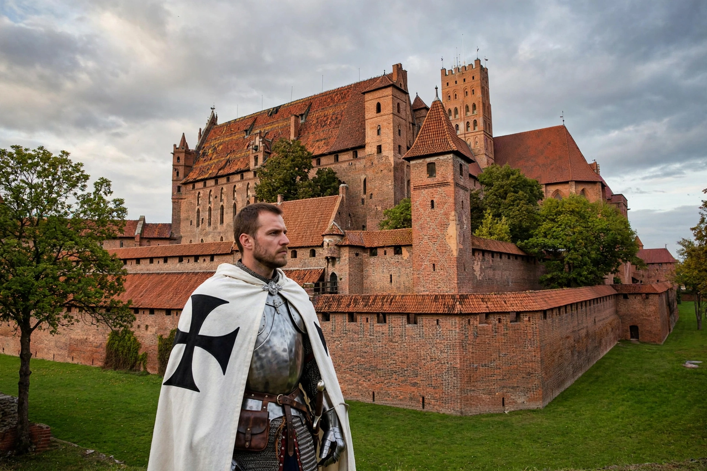

| Teutonic Order | |
|---|---|
| Full name | Order of Brothers of the German House of Saint Mary in Jerusalem |
| Founded | c. 1190 (Acre); militarised 1198 |
| Type | Catholic religious and military order |
| Motto | Helfen – Wehren – Heilen ("Help – Defend – Heal") |
| Emblem | Black cross on white |
| Territory | State of the Teutonic Order (Prussia and Livonia), 1226–1525 |
| Headquarters | Acre; Venice; Marienburg (1309–1457); Königsberg; today Vienna |
| Leader | Grand Master (Hochmeister) |

The Teutonic Order, formally the Order of Brothers of the German House of Saint Mary in Jerusalem (German: Deutscher Orden), is a Catholic religious order founded as a hospital brotherhood in Acre around 1190 during the Third Crusade and militarised in 1198. Like the Templars and Hospitallers, its knights combined monastic vows with warfare in defence of Christendom. The Order became famous — and infamous — for its crusades in the Baltic, where it conquered and colonised pagan Prussia and Livonia and ruled a monastic state for three centuries. Defeated by Poland-Lithuania at Grunwald in 1410 and secularised in Prussia in 1525, the Order survives today in a purely charitable and pastoral form, headquartered in Vienna.
German merchants from Bremen and Lübeck established a field hospital outside besieged Acre in 1190, caring for German-speaking pilgrims neglected by the older orders. In 1198 the brotherhood was reorganised as an order of knights under a rule blending Templar military and Hospitaller charitable elements, and papal recognition followed in 1199. Under Grand Master Hermann von Salza (1209–1239), a shrewd diplomat at the courts of the Pope and Emperor Frederick II, the Order grew into a major power; Frederick's Golden Bull of Rimini (1226) authorised its conquest of Prussian lands.
Invited by Duke Konrad of Masovia in 1226 to defend his frontier against the pagan Prussians, the Order instead built its own territorial state: over fifty years of brutal crusading (the Prussian Crusade) it conquered the Prussian tribes, founded castles and towns — Thorn, Kulm, Elbing, Königsberg — and settled German colonists. In 1237 it absorbed the Livonian Brothers of the Sword, extending its rule over much of present-day Latvia and Estonia. The Order's state (the Ordensstaat), governed from the vast brick fortress of Marienburg after 1309, was a theocratic corporation run by knight-brethren, famed for efficient administration and for the seasonal Reisen — crusading campaigns that drew guest knights from across Europe. Its eastward expansion was checked by Alexander Nevsky at Lake Peipus (1242) and increasingly by the rising union of Poland and Lithuania.
On 15 July 1410 the Order suffered catastrophe at the Battle of Grunwald (Tannenberg), where Grand Master Ulrich von Jungingen and much of its leadership were killed by the army of Władysław II Jagiełło and Vytautas. Though Marienburg held out, the Order never recovered its dominance. Internal taxation disputes drove its Prussian towns and nobles to form the Prussian Confederation, which in 1454 appealed to Poland and triggered the Thirteen Years' War; by the Second Peace of Thorn (1466) western Prussia passed to Poland and the Order held the east only as a Polish fief. In 1525 the last Grand Master in Prussia, Albert of Hohenzollern, converted to Lutheranism and secularised the territory as the Duchy of Prussia under the Polish crown.
The Order persisted in its German and Austrian lands (the Deutschmeister branch) until Napoleon abolished it in the Confederation of the Rhine (1809); it was restored in Austria and refounded in the 1830s–40s. In 1929 it became a purely clerical religious order of priests, brothers and sisters devoted to pastoral and charitable work. Today its Grand Master resides in Vienna, and its sisters run hospitals and care homes in Germany, Austria, Italy, Slovenia and elsewhere. The black cross on white remains its emblem — and a symbol appropriated, controversially, by later German nationalism and by the German armed forces' Iron Cross tradition.